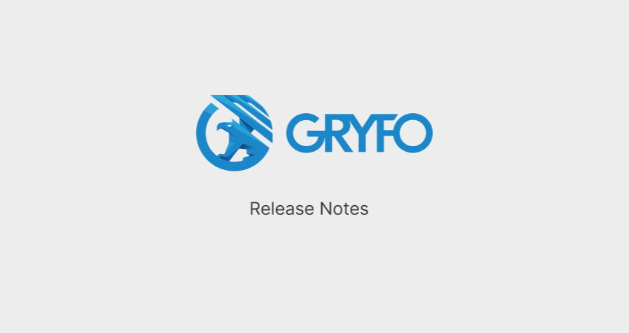
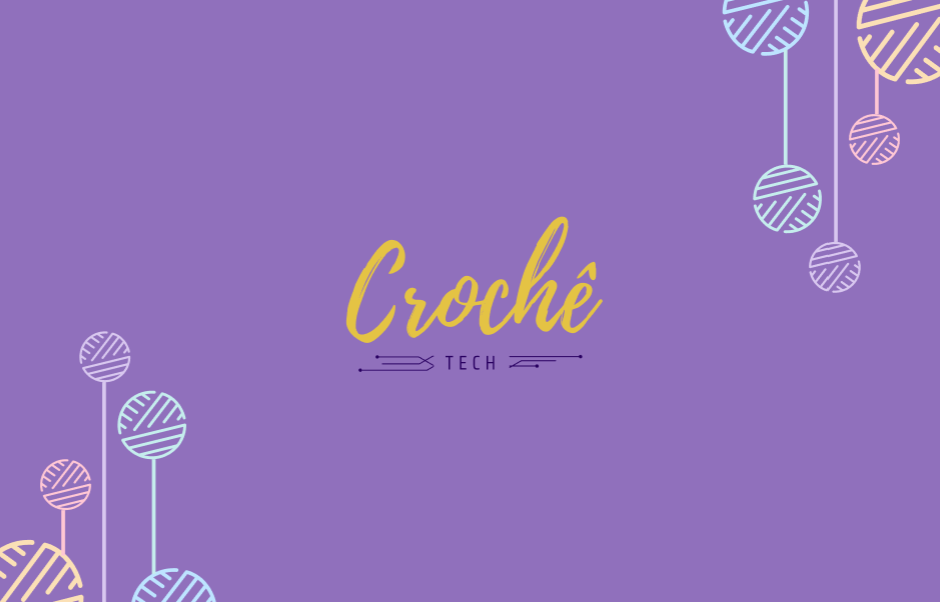

Olá!
Eu sou a Gabriella
Sou uma estudante ambiciosa em busca de aprendizado constante e aprimoramento. Acredito que inovação, criatividade e pensar fora da caixa pode transformar o mundo. Vamos fazer isso juntos?


Sobre mim
Olá! Sou Gabriella Costa, estudante de Análise e Desenvolvimento de Sistemas na Universidade Tecnológica Federal do Paraná (UTFPR), onde mergulho no mundo da tecnologia e programação. No entanto, minha jornada com a tecnologia começou muito antes, aos 13 anos, quando minha curiosidade e criatividade me levaram a explorar programação e design front-end por conta própria. Em meus projetos, busco não apenas criar interfaces, mas também transmitir conceitos, originalidade e inovação. Acredito que cada projeto tem sua própria identidade e procuro destacar isso em cada trabalho que realizo. Além do mundo digital, desde pequena cultivo diversos hobbies relacionados ao artesanato, como crochê, desenho e costura. Sou uma apaixonada por gatos e tenho o prazer de ter minha primeira gatinha, Nami (ilustração dela ao lado!). Além disso, sou uma entusiasta de jogos de todos os tipos, especialmente de jogos de luta, vai encarar? :)
Interesses


Projetos
Gryfo Release Notes Page
Neste site utilizei HTML, Sass e JavaScript. As notas de lançamento são escritas em Markdown pelos desenvolvedores da Gryfo e convertidas automaticamente para HTML, proporcionando uma experiência de leitura fluida e eficiente.
Figma - HTML5 - Sass - JSCrochêTech
Desenvolvido em grupo, o CrochêTech é uma plataforma dedicada aos entusiastas do crochê. Os usuários podem criar uma conta para gerenciar seu inventário de materiais de crochê e utilizar um contador de carreiras para auxiliar em seus trabalhos.
FigmaVamos conversar?
gabx2205@gmail.com
+55 (43)99143-4925